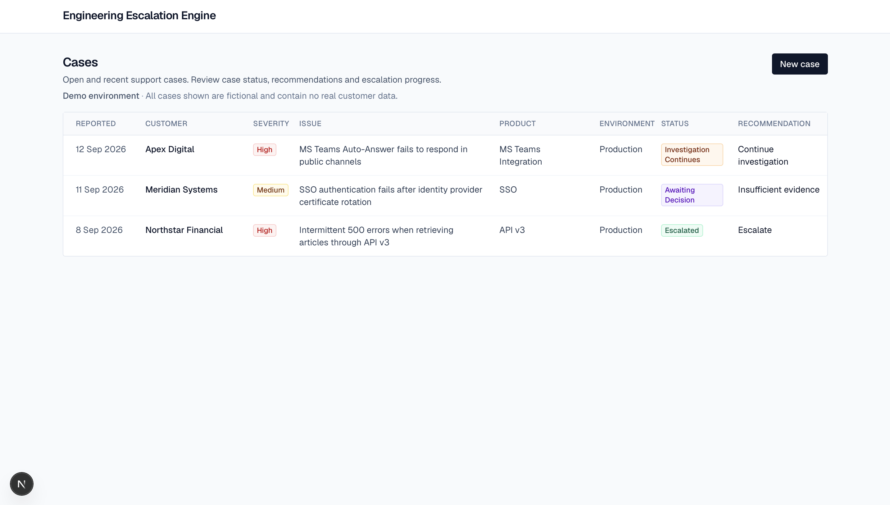
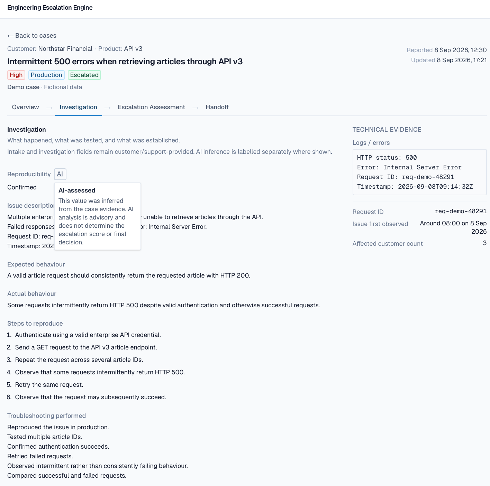
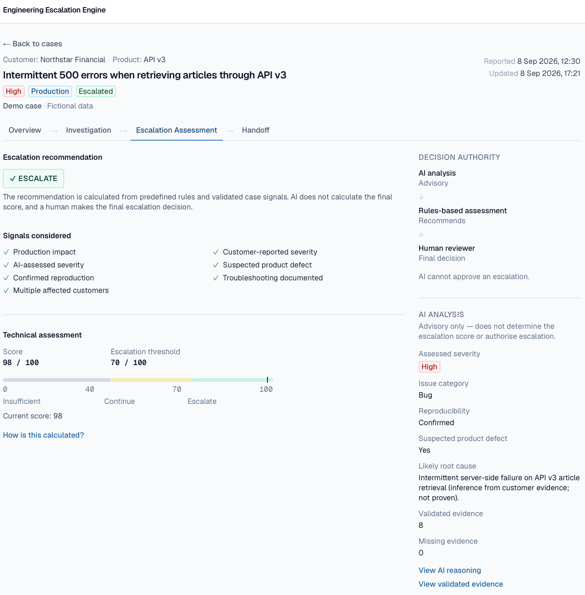
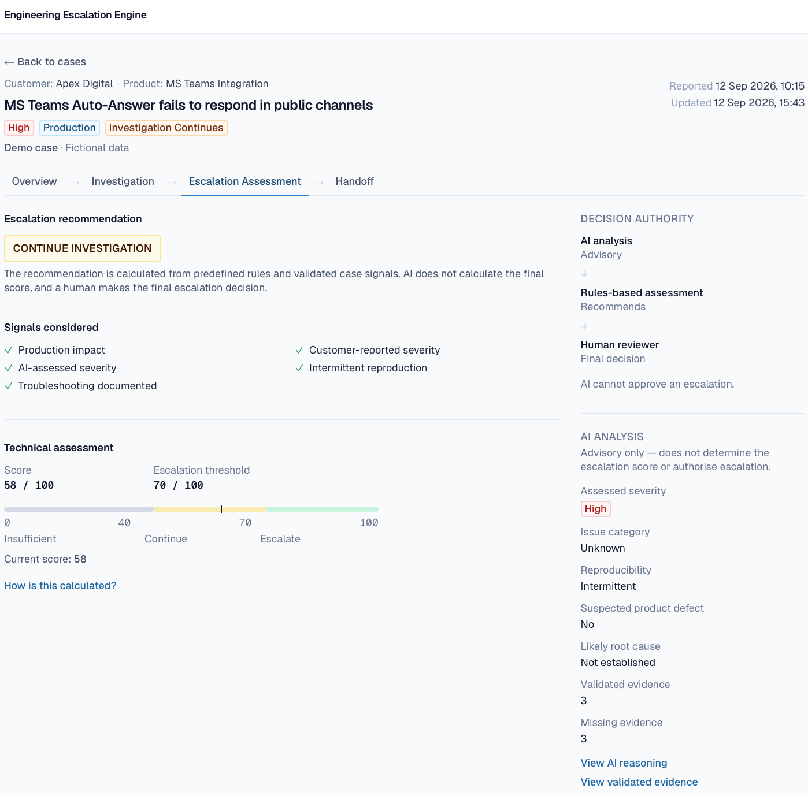
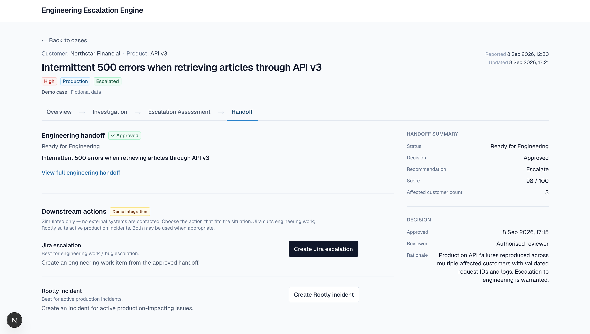

One queue, different outcomes
The dashboard shows that severity alone does not determine escalation. Each case carries its own evidence state, recommendation and workflow status, allowing support teams to distinguish between cases that need more investigation and cases that are genuinely ready for Engineering.
01

Add the final dashboard screenshot asassets/engineering-escalation-dashboard.png
Three fictional cases demonstrate three different support outcomes: insufficient evidence, continue investigation, and escalate.
Evidence before escalation
Investigation data stays grounded in the case. Customer and support-provided evidence remains distinguishable from AI-inferred fields, and the AI badge explains that the analysis is advisory rather than authoritative.
02

Add the investigation screenshot asassets/engineering-escalation-investigation.png
AI provenance is explicit: inferred values are labelled, while the underlying customer and support evidence remains inspectable.
Deterministic escalation assessment
Northstar reaches 98/100 against a 70-point escalation threshold. The rules engine evaluates validated case signals such as production impact, confirmed reproduction, affected customers, severity, troubleshooting, and suspected product defect.
03

Add the Northstar assessment screenshot asassets/engineering-escalation-assessment-escalate.png
The AI analysis is visible alongside, but the final score and recommendation come from deterministic rules.
Knowing when not to escalate
Apex Digital is deliberately just as important as the escalated case. The case is high severity and production-impacting, but unresolved permissions and configuration questions remain. A score of 58/100 keeps the case in investigation instead of creating a premature engineering handoff.
04

Add the Apex assessment screenshot asassets/engineering-escalation-assessment-continue.png
High severity does not automatically mean escalation. Evidence quality and reproducibility matter.
From Support to Engineering
When a human reviewer approves the escalation, the system creates an engineering-ready handoff and surfaces simulated downstream actions for Jira or Rootly. The demo stops short of contacting external systems, but the workflow shows how the decision can move into existing operational tooling.
05

Add the handoff screenshot asassets/engineering-escalation-handoff.png
Approved cases produce a structured handoff and can move towards engineering work or incident coordination.